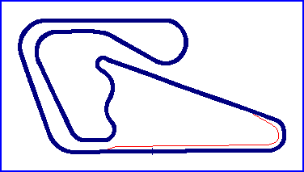

La Guacima

| Length | 1.860 Miles // 3.000 km |
| Direction | Anticlockwise |
Contact Information |
|
| Address | San Jose International Raceway La Guacima Costa Rica |
| Telephone | |
| Website | http://www.laguacima.com |
racingcircuits.net - Lasted Updated: 09 April 2004 11:50:21 GMT Daylight Time
Data
Sources
email - from Alfredo Chavez on Tue 06/04/04 05:56